Carburettors
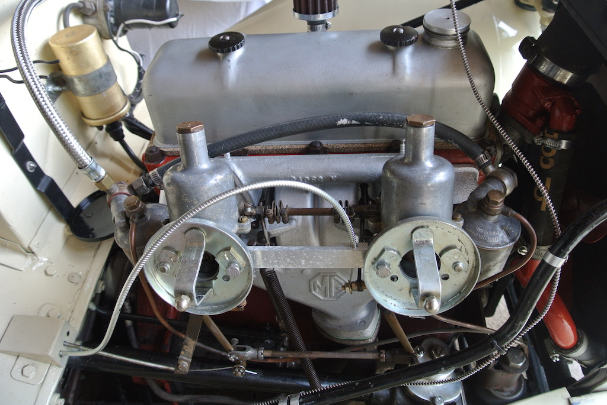In September 2018, when I removed the head of the engine, I had to remove the carburettors in order to remove the manifolds. So I though that I should at least partially strip them down to check that the needles were fully seated and to clean out the float chambers. The first thing that I discovered was that there are no springs on the pistons! I've read that people have used springs of different strengths or no spring at all, but wondered if this was the cause of 'jumping' due to my heavy foot when going over bumps. However, subsequent runs showed a marked reduction in this effect, due to what I'm not sure.
I also discovered that the float needle in the rear carburettor had been put in upside down and the float lever bent to compensate. This diagram from 'Tuning SU Carburetters (1968), although showing the float and chamber top upside down, illustrates that the gap between the float and the top should be 1/8" to 3/16". So I adjusted it accordingly.


I cleaned all the parts in petrol, without disturbing the link between the two carburettors and hopefully the synchronisation. I replaced fibre washers on the fuel inlets and on the float chamber attachments and new gaskets around the top of the float chambers. During a couple of runs (21 miles and 42 miles) the engine ran well, although the plugs were still too sooty and there was a fuel leak from the jet assembly of the front carburettor. So I decided to remove the front carburettor and strip down the jet assembly.
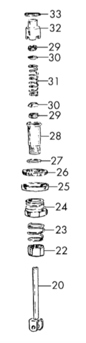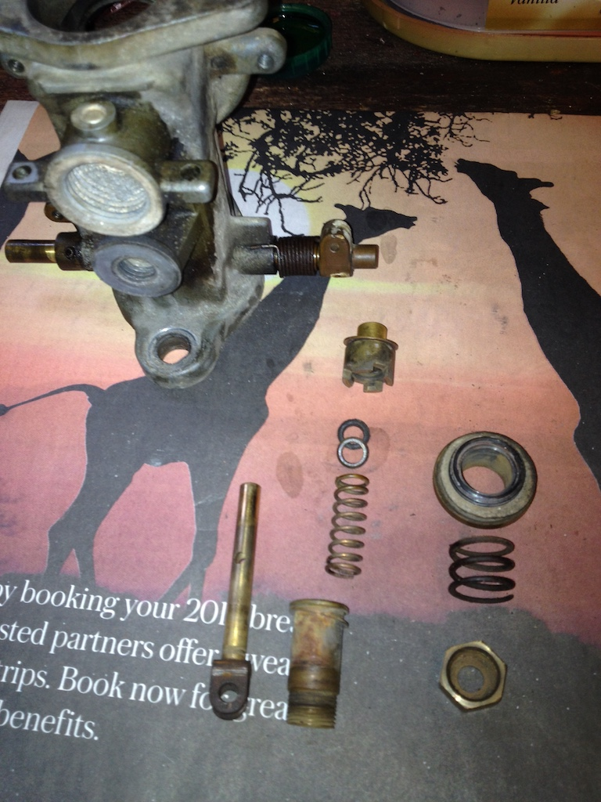 The first photo shows the jet assembly before removing it from the carburettor and the second photo shows the parts that I found. The diagram, taken from a 2007 edition of the Anglo Parts catalogue (page 22), shows what should be present. Actually items 32 and 33 are together in the photo, as are items 27 and 28 and items 25 and 26. For some reason I did not put the main retaining nut (item 24) in the photo. However, you can see that the lower pair of items 29 and 30 are missing. Also, the top cork gland (item 29) was very hard, as was the cork washer (item 26). In fact the brass spacer and the cork washer (items 25 and 26) were loose on the original assembly and could be rotated easily with the fingers.
The first photo shows the jet assembly before removing it from the carburettor and the second photo shows the parts that I found. The diagram, taken from a 2007 edition of the Anglo Parts catalogue (page 22), shows what should be present. Actually items 32 and 33 are together in the photo, as are items 27 and 28 and items 25 and 26. For some reason I did not put the main retaining nut (item 24) in the photo. However, you can see that the lower pair of items 29 and 30 are missing. Also, the top cork gland (item 29) was very hard, as was the cork washer (item 26). In fact the brass spacer and the cork washer (items 25 and 26) were loose on the original assembly and could be rotated easily with the fingers.
Luckily I had one set of cork washers and a spare dished washer (item 30) and so was able to replace these. I also cleaned the lower end of the jet (item 20) so that it would go fully through the mixture adjusting nut (item 22).
The only problem I had replacing the carburettor was connecting the slow-running cable. The bolt through which the cable passes broke on one side of the hole. I drilled a hole in another bolt, but that also broke! I must have been over-tightening the nut. The third attempt, using half a junction block connector above and below the bolt, worked. Again I set the mixture nut to six flats down and the engine started easily and ran well.
Later, when doing the compression tests mentioned above, I had cause to remove the plugs. Those on cylinders 1 & 2 looked better (less sooty), but those in cylinders 3 & 4 were still sooty. So I made the mixture for the rear carburettor leaner by two flats. It is now at four flats from the top.
Fuel Level
On June 21st 2020, as COVID-19 pandemic lockdown measures were starting to be eased, I decided that I would have another try at setting the fuel level in the two carburettors. According to an article by F.E. Old, called ‘BACK TO BASICS #11: CARBURETOR TUNING’ and published at some unknown date in 'The Sacred Octagon', the fuel level should be approximately 3/8" below the top of the jet. On the rear carburettor I couldn't see the fuel in the jet, which is probably as it should be, but in the front carburettor the fuel was at the top of the jet. Since I get 'sooty' rear plugs I had expected it to be the other way around.
 Old says that, since you can't easily measure the fuel height in the jet, the measurement is transferred to the distance of the float lever from the underside of the float chamber top. As you can see from the diagram, where the top of the float chamber is upside down, the distance should be 7/16" (or 11.1mm) when the lever is resting on the fuel valve. Luckily I was able to find a long 7/16" Witworth bolt to use as a measure.
Old says that, since you can't easily measure the fuel height in the jet, the measurement is transferred to the distance of the float lever from the underside of the float chamber top. As you can see from the diagram, where the top of the float chamber is upside down, the distance should be 7/16" (or 11.1mm) when the lever is resting on the fuel valve. Luckily I was able to find a long 7/16" Witworth bolt to use as a measure.
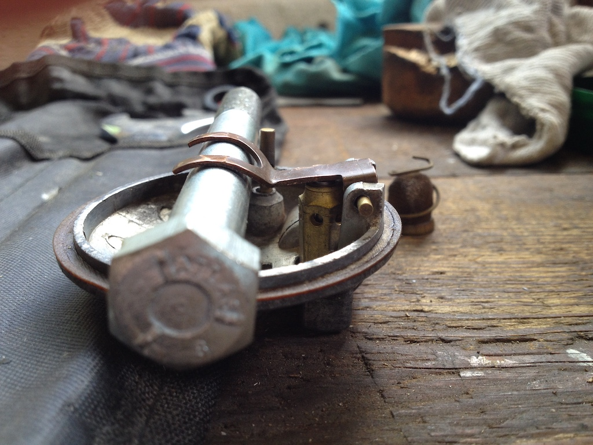I also found on the front carburettor that the flat portion of the lever was very bent, so I straightened it and adjusted it. That on the rear carburettor was not as bad, but I needed to set that also.
Until I try running the car the only test that I could do was to check that I now couldn't see fuel in either of the jets.
Gaskets & Seals
I was still getting seepage of petrol from around the carburettor jets and the bolts connecting the fuel lines to the float chambers and the float chamber to the body bolts would work loose. So in the middle of September 2020 I ordered two sets of gaskets and seals from the Octagon Club. However, it was the middle of October before I made a start on replacing them all on the two carburettors.
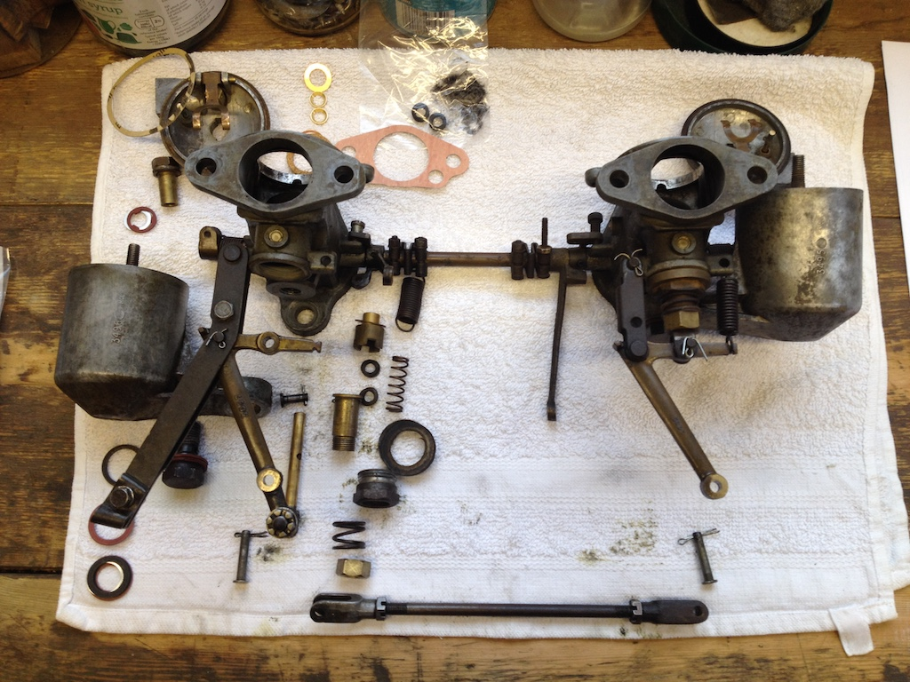I removed the pistons from the carbs and then the carbs from the inlet manifold, but left their throttle links connected, since I wanted to avoid disturbing the balance between the two. I removed both needles from their pistons so as to check that they were both of type ES. Then I replaced them (with a little oil), ensuring that that the shoulders of the needles were flush with the base of the piston. I also checked that neither was bent by sliding the piston into its housing, then rotating the piston to ensure that there was no precession of the tip of the needle.
The next step was to strip down the rear carb and identify the new gaskets/seals/washers. I noticed that the choke linkage did not seem to be properly adjusted, causing the choke on the rear carb to not be fully closed. This may solve my sooty plugs and excess consumption. However, a photograph of the linkage before the carbs were removed from the manifold showed both jets fully raised.
Referring to the diagram above of the jet parts, items 26 and 29 are made of cork. I left these seals soaking in engine oil for 24 hours, as instructed by a note in the gasket kit. This should make them seal properly around the jet. Then it was a case of reassembling the rear carb, replacing each of the old gaskets, washers and seals with a new one. The process was then repeated on the front carb. Prior to reassembly I cleaned each of the parts with a soft wire brush. I then connected the two choke levers, adjusting the linkage so that both jets were fully raised.
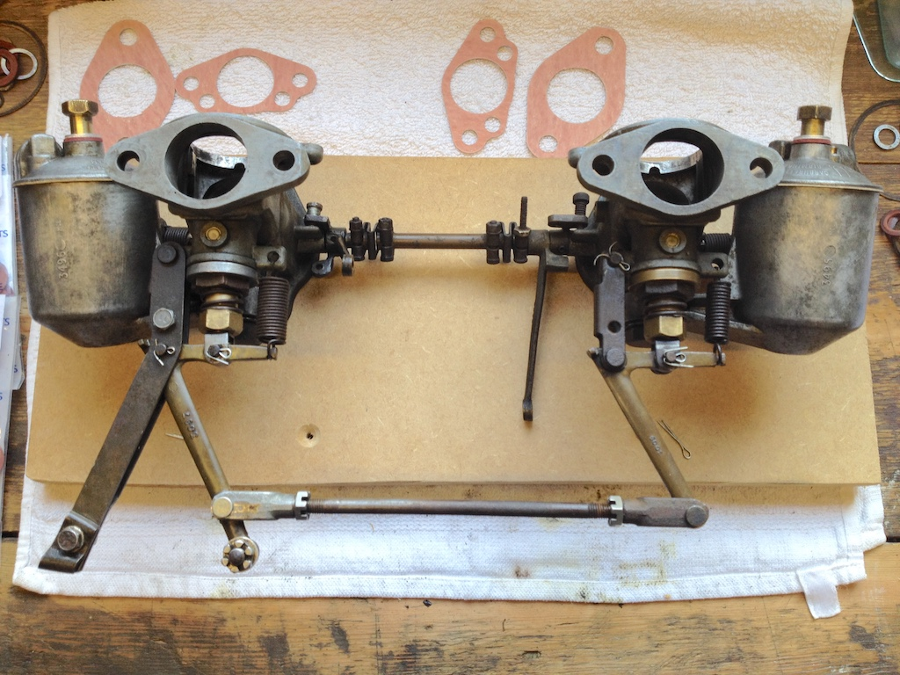With the manifold flanges laying on a flat board I checked that the butterflies still both closed fully. Then I refitted the carbs to the engine and connected them to the controls. When I replaced the pistons however, the rear piston did not fall properly, implying that the jet was not centred! To centre the jet on the rear carb I firstly rotated the jet through 180 degrees, which improved matters, then loosened the jet retaining nut, wound the adjusting nut up to the top, and then, while pushing the piston down with my little finger, tightened the retaining nut. The piston then fell with a clunk and I was able to finish fitting the parts. Finally I put oil in the damper pots and set both jet adjustment nuts to 6 flats.
Although I checked that the main bolts were tight there was a slight seepage from the fuel line banjo bolts when I turned on the fuel pump. Tightening the bolts a little more seemed to stop it. The engine then started with just one pull of the starter. I let it warm up and then, with the air filters removed, lifted each piston a tiny amount with my finger nail. Both caused the revs to drop. I lowered the jets on both carbs until they were each at 12 flats. The drop in revs was less pronounced, but it didn’t rise slightly and stabilise as described in the manuals. Nevertheless I adjusted the slow running to give about 1,000 rpm, although I’m not sure that the slow running knob/cable brings it all the way down. Finally I lubricated the various joints in the linkages with light oil. The next stage is to do some road tests.
Slow Running & Leaks
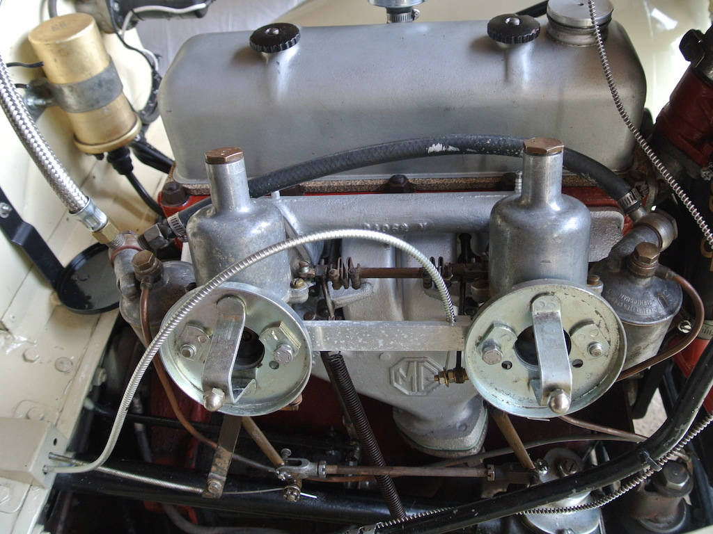In the spring of 2021 I was still getting leaks from the banjo bolts on the fuel supply lines and from the bolts holding the float chambers to the main body and I found that the slow running adjustment was not returning all the way when screwed in. In an attempt to tackle the first problem I put a little thread-lock on each of the bolts. This seemed to work for the two fuel supply pipes, but not for the hold-up bolts. I did notice, however, that the bolt on the front carburettor was shorter than the one on the rear. I had never before taken them off together so as to compare them. So I bought two new bolts from the Octagon Club and fitted them using a little thread-lock around about two threads.
When investigating the slow running adjustment I discovered that the original arrangement has a spring to pull the slow running arm back down as the adjuster is wound in. But, as you can see, the 'home made' fitting does not have a spring. So I bought a spring and a new clamp that attaches the cable to the slow running arm and made two clips, one to hold the cable to the rear carburettor and the second to take the cable and one end of the spring.
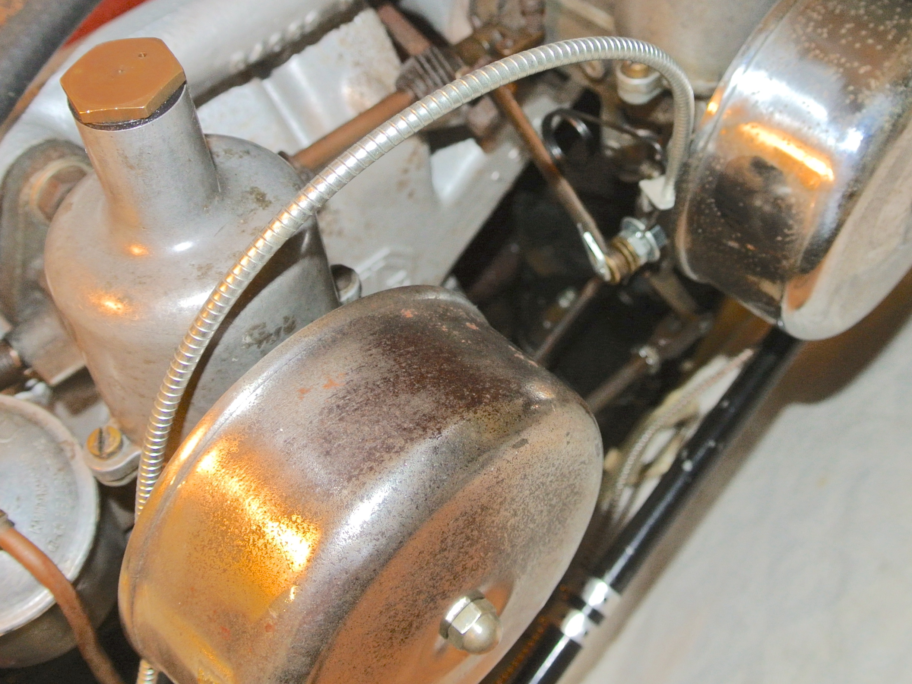In this photo you can't see the rear clip, just the routing of the cable, and you can just about make out the clip on the front carburettor that takes the slow running cable and one end of the spring. It is not quite in focus, but you can just see the spring. The slow running adjuster has never been particularly smooth, but now the arm is returned to its base position. The adjustment screw is missisng, so I pulled the cable through so as to leave the arm just about to activate the throttle linkage. The front bracket is a bit bodged since I had to keep adapting it to make it fit. However, I found the video on 'From the Frame Up' to be invaluable.
Hold-up Bolts
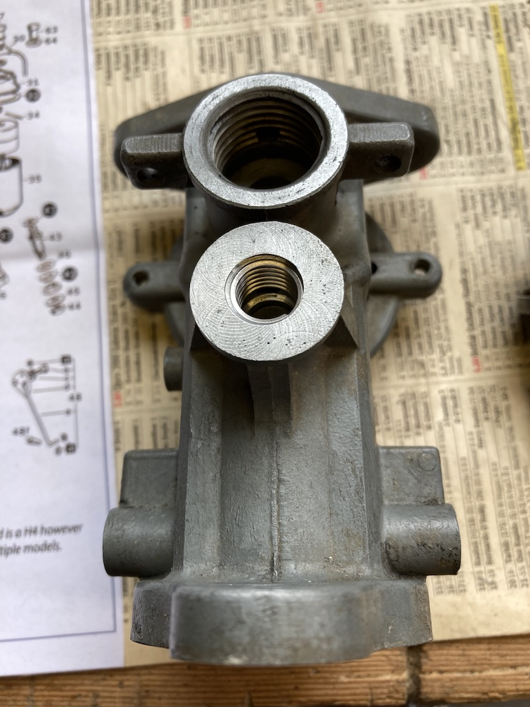In August 2022 I was doing checks on the TC prior to the South Downs Run in early September. I decided to have another go at tightening the carburettor hold-up bolts (that hold the float chamber to the carburettor body) so as to stop fuel leaks. As I tightened the bolt on the front carburettor so the thread stripped! In fact, when I dismantled the rear carb I found that the thread in the carb body was also in a bad way.
I considered fitting helicoils in the bodies, but decided that getting everything right would be too much of a risk. So I dismantled and cleaned both carburettors and sent the two bodies to Burlen to have the helicoils fitted. I was able to talk to the person who would be doing the work, which was reassuring. However, it did mean that we would miss the South Downs Run.
The photo shows the base of one of the carburettors, as returned from Burlen, with the helicoil fitted. I could now tighten the hold-up bolts with more torque, but I was still getting slight leaks and the bolts were working loose. In the end I bought some new washers (there are two fibre and one copper washer under the bolt head and a fibre washer between the float chamber and the body), applied some Blue Hylomar to each surface and put a spot of medium thread lock on the bolts. All now seems to be well.
An Alternative Approach to Tuning
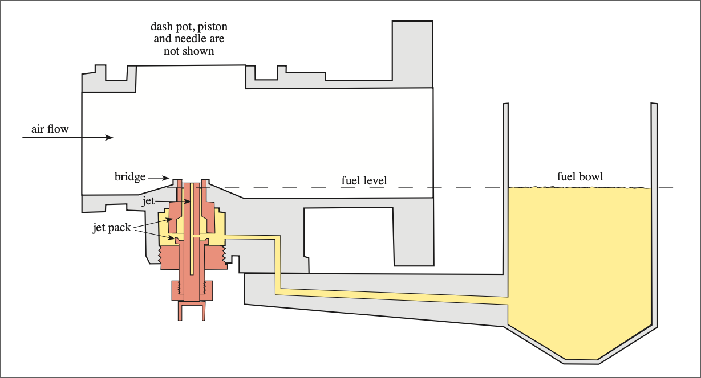In June 2022 an extract from an article called "Taking the Mystery Out of SU Jet Heights", by Manley Ford (who, apparently, was in to MG vintage racing) was posted on the mgtabc forum. That article said that, to get the best fuel atomisation, the jet should be set to between 60-65 thou below the top of the jet bridge (and then NEVER moved) and the fuel level about 1/8" to 3/16" below the top of the jet tube. These measurements are illustrated in the two diagrams taken from the mgtabc post.
Having suffered from another fuel leak due to a loose hold-up bolt (the one that holds the float bowl to the carburettor body) in July 2024 and needing to do a pre MoT check, I decided to try this Manley Ford method. So I cleaned and adjusted the points and the plugs, checked the timing (by ear) and set about the fairly tedious process of making the adjustments to each carburettor.
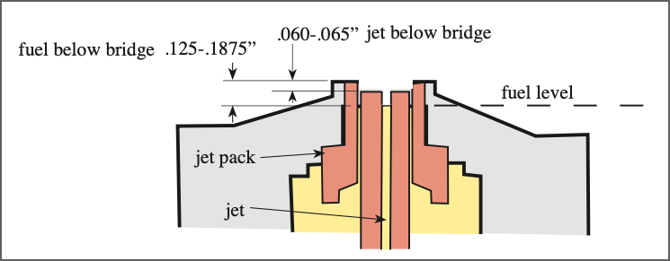Positioning the jet relative to the bridge is easy, just wind the jet adjusting nut and measure the separation with some vernier callipers. But setting the fuel level is where the tedium comes in. You can lower the jet using the choke until the fuel meniscus is level with the top of the jet and then measure the jet's position, but to adjust the fuel level involves removing the top of the float bowl and removing the float lever (being careful not to lose bits that easily slide out), bending the lever, reassembling and measuring again. Then repeat this process (in my case multiple times) until the fuel level is where you want it. Of course, it's necessary to have the fuel pump running when taking the measurements.
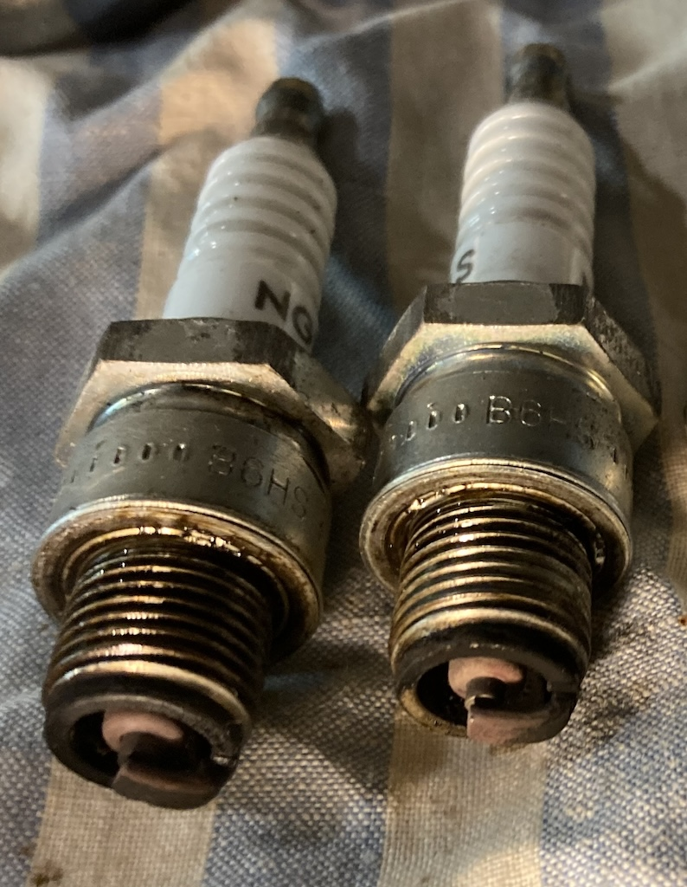So then the moment of truth. To my surprise the engine started after only a couple of turns. Then, to my even greater surprise, the engine would only run smoothly if I pushed the choke in completely, keeping the revs up with the slow running adjustment. I took the car for my usual 6-mile test run, which is a combination of slow village roads and fast A roads, and it had never run as well.
A few days later I took the TC for a longer, 17-mile, run and it behaved very well. On my return I removed the plugs to find that they were closer to the colour I would like them to be. My suspicion is that I won't be able to get them any better since, over it's 76 year history, the jets and the needles will have worn. I could replace both, but I've had enough of dismantling and rebuilding carburettors!
It will be a while before any improvement or degradation of fuel consumption is visible, but for the time being I'm very pleased with the result of applying the Manley Ford approach to tuning SU carburettors on my TC.
© David James 2024 Last updated: 14th July 2024